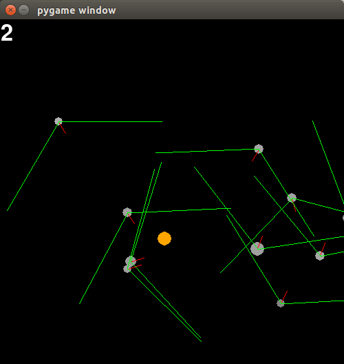

Our Project's Story
The motivation behind this project was to explore genetic algorithms with natural selection in contrast to the scoring and artificial selection which is usually used in programed problem solving. We decided to create our own simulate rather than trying to solve an existing problem with evolutionary algorithms.
We began by trying to implement a genetic algorithm that selects for the best blobs artificially. At this stage we were experimenting with mutation scoring mechanisms, starting with a raw average of the elements in the two top-scoring blobs’ neural networks, and moving to a method more reflective of the natural world. Currently, child networks are created by choosing random corresponding elements from its parents for each element in its own weight matrices, and then applying mutations to those elements at a user-defined rate. Scoring was initially based on distance moved towards the singular food we had at the time, but we quickly discovered that this kind of artificial selection was overly dependent on our formula. Once we had fully implemented our final neural networks, score became a raw count of the number of food eaten by the agent.
Another improvement we made was to add a field of vision to each blob. Previously, each blob was aware of where every single food was, regardless of distance and line of sight. This was obviously not realistic, so we changed each blob to only spot food within a specific angle and radius. This resulted in interesting behavior: the blobs started spinning more, which is in fact the best way to maximize ground covered.
The final milestone in our project was implementing natural selection over artificial selection. We’ve transitioned to allowing blobs to detect both food and other blobs, though currently they only learn to ignore each other and go for the food, regardless of how many generations we run. To try to stimulate some kind of social interaction between blobs, we’ve made blobs reproduce when they intersect, though the neural networks and current sensory input seems to not allow the development of behavior around this. Instead, the reproduction either over-populates the screen with blobs, or is too heavy of a culling force depending on the energy cost of the reproduction.